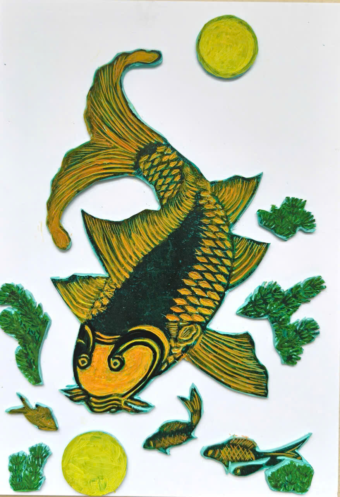
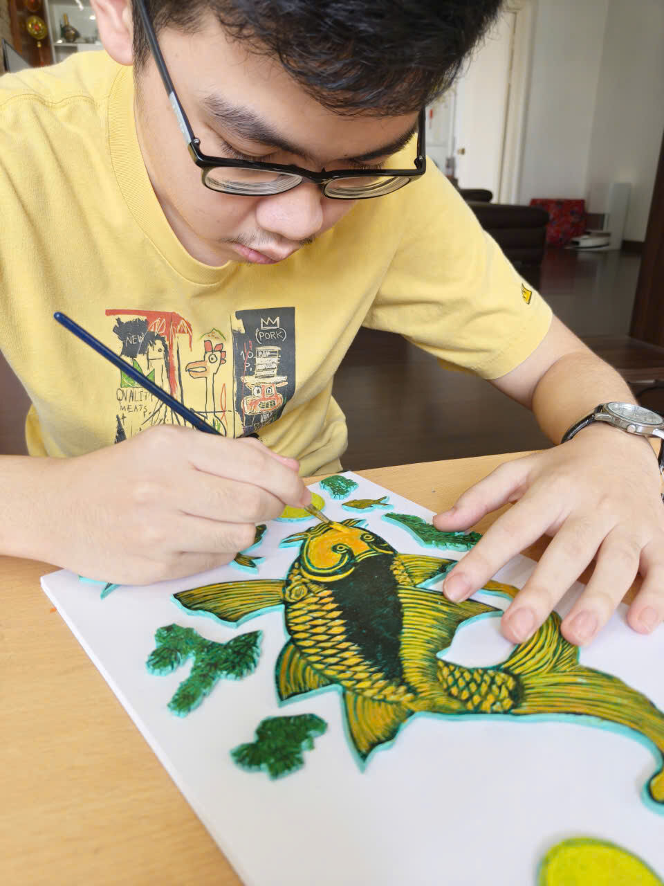
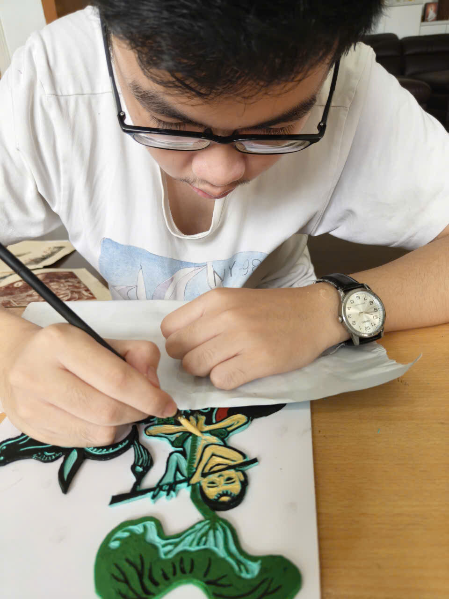

Tradition Opened Up Through Creative Hands
Chạm âm
Đông Hồ
Carved reliefs · A phone on a stand · A voice
Three Đông Hồ folk paintings, re-cut as something you can feel with your hands — and an app that watches your fingertip and says out loud what you are touching.

Gà dạ xướng · the rooster plate
Di ngón tay trên bản khắc để nghe từng chi tiết.
Move a finger across the plate. This is roughly what the app does, in a browser.
Why we started
“Please do not touch”
Đông Hồ painting comes out of one village in Bắc Ninh. The outlines are printed from carved woodblocks onto giấy điệp, paper brushed with crushed seashell so it glitters, and every colour is ground from something you could pick up off the ground: red from stone, yellow from sophora flowers, blue from indigo leaves, black from burnt bamboo. People used to buy them for Tết, paste them on the wall, and live with them for a year.
For a blind visitor, a room full of them is a room full of closed doors. The sign on the wall says do not touch, and in front of a painting that sentence quietly means something else: this was not made with you in mind.
Description doesn't close the gap either. Being told “it's a rooster, red and green, standing on grass” is a summary of a painting. It is not an encounter with one. You don't learn that the tail is built from long feathers stacked one over the other, or that the ruff around the neck is cut as rows of fine parallel lines, until your own finger crosses them.
That seemed like a loss worth doing something about. Not a translation of the painting into words, but a way to put the painting itself into someone's hands — and then have it answer when they ask what they have just found.
Tranh Đông Hồ vốn để treo, để ngắm. Với người khiếm thị, đó là một vẻ đẹp luôn nằm sau một tấm biển “không chạm vào hiện vật”.



How it was made
Cut it, raise it, then teach it to talk
There was no shortcut available. A relief that reads under the fingers has to be carved by hand, one line at a time, and the app only became worth building once there was something real on the table for it to look at.
Carving the plate
The Đông Hồ design is traced onto a lino plate and cut with gouges, the same way the village cuts its woodblocks — except here the carving is not a tool for printing. The carving is the artwork. Everything that will later be read by a fingertip has to be decided at this stage: how deep a groove goes, how wide a ridge is, how much space to leave between two feathers so they stay two feathers and not one bump.


Raising it off the page
The carved shapes are cut free, then glued down onto a backing board in layers, so the picture stands above the surface instead of sitting flat on it. Layering is what gives a hand somewhere to go: the tail sits above the body, the buffalo's head sits above its shoulder, and the edge between them is a step a finger can find without being told where to look.


Painting it back into a Đông Hồ
Then the relief is painted in the old palette — red, green, yellow, black — so it still works as a Đông Hồ painting for anyone looking at it. The colour follows the carving: each raised piece gets its own colour, so the edge you feel and the edge you see are the same edge. A sighted child and a blind child can stand at the same table and be looking at the same thing.


Writing the app
The relief tells you a shape is there. It can't tell you the bird is crowing, or that the carp is looking at a reflection of the moon. That is the part the phone does: it sits on a small stand above the painting, watches the hand below it, and speaks.
Most of the work went into the unglamorous half — finding a hand on camera without assuming a skin tone, knowing the difference between a finger passing over a detail and a finger stopping on one, and getting an answer back fast enough that nobody standing at the table has to wonder whether it is broken.


What the app does
You put a painting under the stand and open the app. It looks once at what is on the table, works out which of the three Đông Hồ pieces it is, and reads that painting's story aloud — the legend behind it, what the animals stand for, why people hung it at Tết.
Then it goes quiet and watches your hand. Rest a fingertip on any part of the relief and hold it still for about a second; the app takes that moment as a question, looks at what is under your finger, and answers in Vietnamese. Lift your hand, move somewhere else, and it is ready for the next one. There is nothing to tap, and nothing to hold.
Out of the workshop
Putting it on a table in front of strangers
A project like this can look finished on a desk and fall apart the moment someone else touches it. So the reliefs and the phone went out to public events, set up the way anyone could walk up to them: two paintings, a stand, and no explanation until someone asked.
What a real table teaches you is mostly about hands. People reach with the flat of the palm before they reach with one finger. They pass over a detail three times before stopping on it. They ask about the thing in the corner, not the thing in the middle. Every one of those habits turned into a change in the app — how long a pause counts as a question, how far a hand has to travel before the next answer is allowed, how much the app should say before it lets go and listens again.

“Quote from a visitor goes here — something someone actually said at the table.” Who said it · which event
“And a second one here.” Who said it · which event
Phần này đang để trống chờ lời kể của bạn về phản ứng của khách tham quan.
What happens next
The people it was actually built for
Everyone who has used it so far could see. They closed their eyes, which is a useful test and not the same test. The next step is to bring the paintings and the phone to blind children and let them decide whether any of this works.
We expect to be wrong about a lot of it. The descriptions were written by people who learned these paintings by looking at them, and they are probably full of words that only mean something if you have seen the thing already. The parts of the relief that feel obvious to us may be the parts nobody finds. The plan is to sit down, say nothing, watch what they reach for first, and then rewrite the app around their questions instead of ours.
Bước tiếp theo: mang tranh và ứng dụng đến với các em nhỏ khiếm thị, và sửa lại mọi thứ theo những gì các em hỏi.